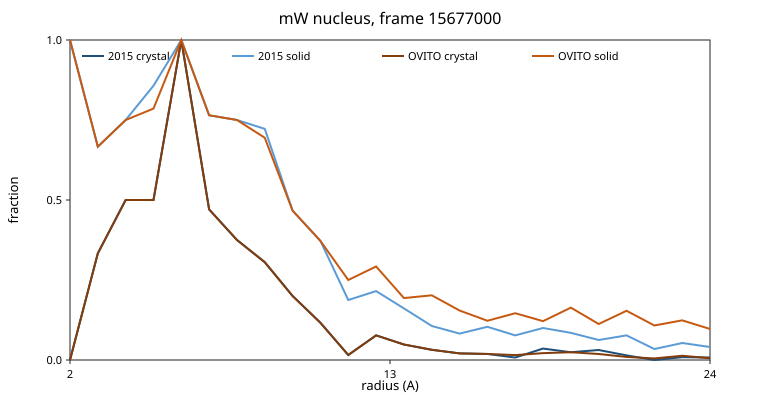
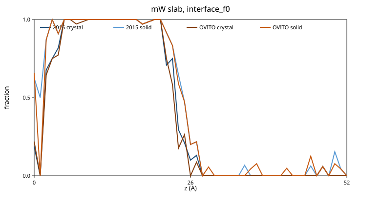
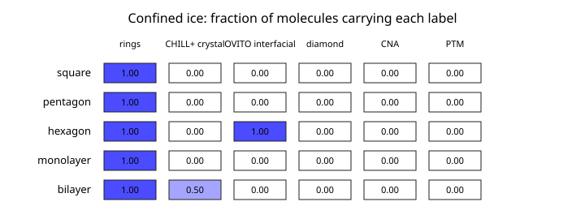
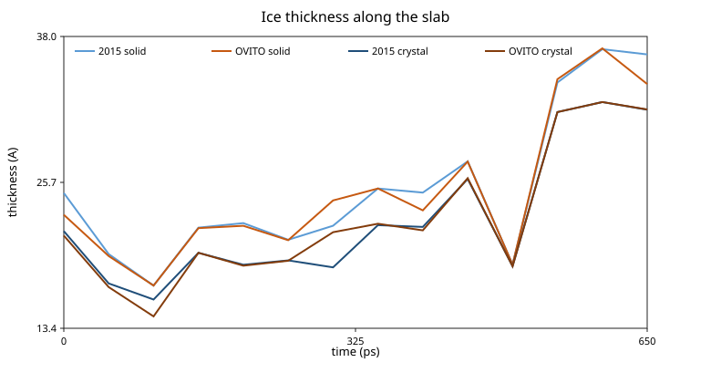

Interface and confined ice#
Two published CHILL+ rules, on the same coordinates, with the
thresholds left alone.
The neighbour test and the \(q_3\) shell are what move the labels.
The open edges do not, on these frames.
Prism blocks and sheet rings name confined ice that CHILL+, the
diamond test, adaptive common-neighbour analysis and a tetrahedron
template do not.
The rule itself is
CHILL+: the published rule and the OVITO rule.
The counts below are seams chill-plus on the shipped frames.
Ideal ice Ih (input/traj/ice1h.lammpstrj, 128 molecules) is
hexagonal under both rules, with no disagreements.
The two rules#
Nguyen and Molinero, J. Phys. Chem. B 119 (2015) 9369, equation 1
averages \(q_3\) over the four nearest neighbours.
A staggered bond is c(i,j) <= -0.8.
An eclipsed bond is -0.35 <= c(i,j) <= 0.25.
Table 1 gives a crystal or clathrate label only when four neighbours
lie inside the cutoff.
Footnote a of that table keeps the interfacial neighbour test.
Two staggered bonds need a neighbour with more than two staggered
bonds.
Three staggered bonds and no eclipsed bond need a neighbour with
more than one staggered bond.
The OVITO 3.17.2 manual
(Chill+)
states the same cutoff and the same four-bond rows, and then differs
in three places.
A staggered bond is a correlation less than -0.8.
An eclipsed bond lies between -0.35 and 0.25.
Interfacial ice is “4 bonds of which 2 or 3 staggered”, with
hexagonal ice preferred when the fourth bond is eclipsed.
The neighbour test is not stated.
mdapy’s Chill+ kernel (cross-checked there against OVITO’s
ChillPlusModifier) is the same statement in code.
\(q_3\) is summed over every neighbour inside the cutoff, not over the
four nearest.
The inequalities are strict.
A row is classified only when the coordination is 4.
Two staggered bonds, or three staggered and no eclipsed bond, are
interfacial, with no look at the neighbour.
chill+ in the supplied examples is the 2015 rule.
ovito-chill+ is the OVITO/mdapy rule.
Neither threshold is changed.
The comparison turns one lever at a time: the neighbour test, then
the \(q_3\) shell, then the open edges.
An atom is counted under the lever that first produces the OVITO
label.
If more than one lever moves the label, the atom is mixed.
On both frames below, every atom that changes label has exactly four
neighbours inside 3.5 Å.
The shell condition in Table 1 is not the split.
Widening \(q_3\) changes the label of a four-coordinated molecule when
one of its neighbours has a further neighbour inside the cutoff.
The open edges move no atom on either frame.
No correlation in these two frames sits on -0.8, -0.35 or 0.25.
Nucleus#
Frame 1 of input/traj/nucleation_f1.lammpstrj (timestep 15677000,
4096 mW molecules).
The two rules disagree on 397 molecules.
label |
2015 |
OVITO |
|---|---|---|
cubic |
47 |
48 |
hexagonal |
62 |
54 |
water |
3589 |
3360 |
interfacial |
240 |
478 |
clathrate |
20 |
21 |
interfacial clathrate |
138 |
135 |
All 397 molecules are in the four-neighbour shell. Of the molecules that do not change label, 1927 also have four neighbours, 1428 have five, 289 have six and 38 have seven or more. 17 have three. The extra neighbours sit on the agreeing population. They change a neighbour’s \(q_3\), and that is the shell lever.
Ring membership does not separate the 397. 395 of them lie on a primitive 6-ring, 381 on a 5-ring and 111 on a 4-ring, on the 3.5 Å graph. The agreeing population is 3656, 3583 and 1957 on those same rings. The primitive-ring search finds 40 prismatic faces.
The crystal radius, read outward from the shell of highest crystal fraction to the 0.5 crossing, is 4.75 Å. The 10-90 width of that crystal front is 7.69 Å. The solid radius is 2.25 Å (2015) and 2.25 Å (OVITO). The 10-90 width of the solid front, measured from the center of mass, is 10.26 Å under the 2015 rule and 14.56 Å under OVITO.
The same frame has an instantaneous surface in the sense of Willard
and Chandler, J. Phys. Chem. B 114, 1954 (2010).
The coarse-graining Gaussian has their width, ξ = 2.40 Å.
Rays leave the center of mass of the 2015 crystal.
The surface on a ray is where the coarse density crosses the midpoint
of the core and the outer liquid.
288 of 288 rays cross.
The mean radius is 9.19 Å and the root-mean-square deviation of the
surface about that mean is 7.59 Å.
The 10-90 width of the coarse density, measured along the local
normal of that surface, is 1.34 Å.
On the same coordinate the 2015 solid fraction has a 10-90 width of
1.75 Å and the OVITO solid fraction has 1.79 Å.
The 10.26 Å and 14.56 Å widths are the center-of-mass profiles.
Adaptive common-neighbour analysis calls 4096 of 4096 molecules other.
The diamond test calls 13 cubic and 14 hexagonal.
A tetrahedron template with RMSD below 0.1, the OVITO polyhedral
template matching cutoff, passes 12 molecules, of which 1 is in
the disagreeing set.
Mean q6 is 0.540 on the disagreeing set and 0.489 on the rest.
Bulk ice Ih in the test set has mean q6 0.626.
Slab#
input/traj/interface_f0.lammpstrj is 864 mW molecules in a box of
22.99 × 21.61 × 52.51 Å.
The long axis is the surface normal.
The two rules disagree on 46 molecules.
lever |
molecules |
|---|---|
neighbour test |
5 |
\(q_3\) shell |
41 |
open edge |
0 |
both levers |
0 |
label |
2015 |
OVITO |
|---|---|---|
cubic |
1 |
1 |
hexagonal |
352 |
346 |
interfacial |
49 |
57 |
clathrate |
3 |
3 |
interfacial clathrate |
25 |
20 |
water |
434 |
437 |
The net interfacial count rises by 8, from 5.67% to 6.60%. Forty-six labels move, in both directions. Hexagonal to interfacial is 10. Interfacial to water is 5 and interfacial to hexagonal is 4. Interfacial clathrate to water is 10. The solid fraction is 0.465 and 0.468. The crystal fraction is 0.409 and 0.402.
The 2015 solid slab is 24.82 Å thick, between Gibbs surfaces at 0.30 Å and 25.11 Å. The 10-90 widths are 3.04 Å and 5.29 Å. The OVITO solid slab is 22.98 Å thick, between 2.05 Å and 25.04 Å. The widths are 1.10 Å and 5.29 Å. One surface stays put. The other moves by 1.76 Å, and that is the whole of the thickness change. The crystal slab, cubic plus hexagonal only, is 21.61 Å (2015) and 21.23 Å (OVITO).
The 46 molecules sit on average 5.33 Å from the nearest 2015 solid surface. The other 818 sit 6.67 Å away. The shift is real and small. Bins on the two surfaces hold part of the 46, and the rest are scattered through the liquid, one or two molecules in a 1 Å bin. All 46 have four neighbours inside 3.5 Å. Forty-five lie on a 6-ring. There is no prism and no bilayer.
Adaptive common-neighbour analysis calls every molecule other.
The diamond test calls 143 hexagonal and none cubic.
The tetrahedron template passes 346 molecules, 8 of them in the
disagreeing set.
Mean q6 is 0.527 and 0.511.
Confined ice#
The frameworks are ideal oxygen sites at a nearest-neighbour
distance of 2.75 Å.
A nanotube is a stack of 8 rings in a box whose long axis is the
tube.
A sheet is a rectangular honeycomb, one layer or two.
The second layer is shifted by one bond in the plane, which is the
graphite AB stacking, and separated by 2.75 Å.
Half the bilayer molecules then have three neighbours and half have
four.
The library builds the oxygen sites. No trajectory is stored.
The seams command does not print the prism or sheet census.
framework |
N |
2015 |
OVITO |
rings |
diamond |
CNA |
PTM |
|
|---|---|---|---|---|---|---|---|---|
square tube |
32 |
water 32 |
water 32 |
prism 32, 8 blocks |
0 |
0 |
0 |
0.424 |
pentagon tube |
40 |
water 40 |
water 40 |
prism 40, 8 blocks |
0 |
0 |
0 |
0.487 |
hexagon tube |
48 |
water 48 |
interfacial 48 |
prism 48, 8 blocks |
0 |
0 |
0 |
0.509 |
monolayer |
48 |
water 48 |
water 48 |
polygon 48 |
0 |
0 |
0 |
0.741 |
AB bilayer |
96 |
cubic 48, water 48 |
cubic 48, water 48 |
bilayer 96 |
0 |
0 |
0 |
0.622 |
The hexagon tube is the neighbour test on its own.
Every molecule has four neighbours and an interfacial bond count.
Footnote a fails for all 48, so the 2015 rule leaves them as water.
OVITO labels all 48 interfacial.
The prism blocks are the same eight basal pairs either way.
Square and pentagon tubes are water under both rules.
Their bond angles are not the staggered ice pattern.
The prism blocks still name the tube.
The monolayer has three neighbours, so both CHILL+ rules say water
before any bond test.
Every molecule is on a planar 6-ring.
Its mean q6 is 0.741, above the 0.626 of bulk ice Ih, so a q6
threshold taken from bulk ice does not reject the sheet.
The AB bilayer is split by coordination.
The four-coordinated sublattice is cubic under both CHILL+ rules.
The diamond test, adaptive common-neighbour analysis and the
tetrahedron template call none of the 96 a crystal.
The bilayer rings cover all 96, and there is no prism.
Adaptive common-neighbour analysis is the Stukowski test: 12
neighbours for FCC, HCP and icosahedral, 14 for BCC, with the
adaptive cutoff (1+sqrt(2))/2 times the mean neighbour distance.
The diamond test is the second-shell common-neighbour test used for
cubic and hexagonal diamond.
The template is the four unit vectors of a tetrahedron, accepted
when the best rigid match has RMSD below 0.1.
q6 is the Steinhardt invariant on the 3.5 Å shell, the quantity
freud.order.Steinhardt(l=6) returns for that neighbour list.
Growth#
The campaign is input/interface/campaign.py.
It starts from interface_f0.lammpstrj, the mW Stillinger-Weber
potential, a 10 fs step, and NVT at the volume of that frame.
Four velocity seeds, numbered 1 to 4, run at 240, 250, 260 and 270 K.
The velocity seed is ten times the temperature plus the replica, so
the sixteen streams differ.
Frames are kept every 10 ps for 800 ps.
The slope on a seed is ordinary least squares of the solid thickness
while the 2015 solid fraction lies between 0.15 and 0.90 and both
thicknesses are still defined.
The mean of the four seeds is a percentile bootstrap, 10000 draws,
Hyndman-Fan type 7, generator seed 270.
The interval is the 2.5 and 97.5 percentiles.
The difference is the 2015 rate minus the OVITO rate on the same
seed, resampled by the shared seed index.
It excludes zero when those two percentiles lie on the same side of
zero.
The thickness below is the ice slab on that fixed-volume cell. It is the sum of the two fronts. It is not a speed that can be set beside a direct-coexistence table.
T (K) |
2015 slab (Å/ps) |
OVITO slab (Å/ps) |
|---|---|---|
240 |
0.269 [0.224, 0.312] |
0.287 [0.237, 0.334] |
250 |
0.174 [0.148, 0.200] |
0.183 [0.151, 0.213] |
260 |
0.143 [0.128, 0.159] |
0.148 [0.132, 0.164] |
270 |
0.0292 [0.0137, 0.0569] |
0.0299 [0.0139, 0.0584] |
Rule-sensitivity bound#
The paired difference on that slab, 2015 minus OVITO, excludes zero at 240, 250, 260 and 270 K. Four further seeds at 272 K and at 273 K put the interval across zero.
T (K) |
difference (Å/ps) |
excludes zero |
|---|---|---|
240 |
−0.0179 [−0.0217, −0.0140] |
yes |
250 |
−0.00854 [−0.0130, −0.00395] |
yes |
260 |
−0.00466 [−0.00733, −0.00245] |
yes |
270 |
−0.00067 [−0.00154, −0.00015] |
yes |
272 |
−0.00015 [−0.00058, 0.00032] |
no |
273 |
−0.00028 [−0.00054, 0.00001] |
no |
272 K is the rule-sensitivity bound for this thickness. Below it the two published CHILL+ rules are distinguishable as growth rates. At 272 K they are not. The crystal thickness, cubic plus hexagonal and not the interfacial label, already includes zero at 240, 260 and 270 K, so the bound is carried by the interfacial label. The 2015 thresholds are unchanged.
Direct coexistence#
input/interface/npt_growth.py builds the comparison cell.
The oxygen sites are the GenIce ice Ih cell.
Its basal normal is y, where the planes come in pairs 0.92 Å apart
separated by 2.76 Å.
Its secondary-prism normal is z, where the planes are 2.25 Å apart.
Each face is 8064 molecules, ice in the middle half and liquid in
the two caps, so the periodic cell has two interfaces.
The ensemble is anisotropic NpT at 1 bar (0.986923 atm in the real-unit
pressure of LAMMPS).
Four velocity seeds run at 240, 250, 260 and 270 K.
The speed of one front is L / (2 τ), the definition in equation 2 of
Espinosa, Navarro, Sanz, Valeriani and Vega, J. Chem. Phys. 145,
211922 (2016), page 211922-4.
L is the liquid length in the first production frame.
τ is the first frame whose solid fraction is at least 0.95.
The mean of the seeds that freeze is the same percentile bootstrap.
face |
T (K) |
2015 (Å/ns) |
OVITO (Å/ns) |
seeds |
|---|---|---|---|---|
secondary prism |
240 |
139.5 [133.0, 145.9] |
139.5 [133.0, 145.9] |
4 |
secondary prism |
250 |
108.3 [100.0, 115.5] |
108.3 [100.0, 115.5] |
4 |
secondary prism |
260 |
74.2 [72.6, 77.1] |
74.2 [72.6, 77.1] |
4 |
secondary prism |
270 |
18.8 [15.5, 20.4] |
18.8 [15.5, 20.4] |
3 |
basal |
240 |
62.5 [60.7, 64.0] |
62.9 [61.1, 64.4] |
4 |
basal |
250 |
53.7 [45.2, 62.1] |
53.7 [45.2, 62.1] |
4 |
basal |
260 |
37.7 [34.0, 40.6] |
37.8 [34.3, 40.6] |
4 |
basal |
270 |
not frozen in 2 ns |
not frozen in 2 ns |
0 |
The paired difference includes zero on every row that freezes. On this cell the front speed is not sensitive to the choice of rule. The 272 K bound belongs to the fixed-volume thickness, not to this speed.
Table I on page 211922-4 lists the mW secondary-prism rate, and no basal rate. The printed values are 490 Å/ns at 240 K, 375 Å/ns at 250 K and 266 Å/ns at 260 K. The table has no 270 K row. Table II on the same page gives the mW melting point as 274.6 K. The secondary-prism speeds here are 0.28 times those printed numbers. Montero de Hijes, Romano, Gorfer and Dellago, J. Chem. Phys. 158, 204706 (2023), say in the caption of their Figure 4 that the mW points taken from that table were divided by ten, because the authors of the 2016 paper acknowledged a units erratum. Dividing the printed table by ten gives 49, 37.5 and 26.6 Å/ns. The speeds here are 2.8 times those corrected values. The basal face is slower than the secondary prism at each temperature, which is the direction Espinosa, Navarro, Sanz, Valeriani and Vega report for TIP4P/ICE on the same page: the basal rate is within five per cent of 0.6 times the secondary prism at 245, 255 and 260 K. They do not print an mW basal number.
Which definition meets Table I#
The gap is not the 0.95 cutoff, the box length, the barostat period, or the number of molecules.
Equation 2 is u = L / (2 τ), with L the liquid length and the 2 standing for two interfaces. On a linear freeze that is the same number as the slope of the solid count,
u = (dN/dt) Lz / (2 N),
and the same number as half the slope of the solid thickness. Lengths here are angstroms and times are picoseconds, so the speed in Å/ns is 1000 times the speed in Å/ps. 490 Å/ns is 49 m/s.
input/interface/espinosa_protocol.py repeats the secondary prism
at the size on page 211922-2: 4000 molecules, ice in the middle
half, box 39.11 × 36.77 × 90.37 Å. The barostat is anisotropic
Nose-Hoover at 1 bar, with the 2 ps period stated for their
thermostat and barostat. LAMMPS has no velocity-rescaling fix of
the Gromacs kind; Nose-Hoover is the NpT fix. The mW parameters are
the Molinero and Moore set: ε = 6.189 kcal/mol, σ = 2.3925 Å,
a = 1.80, λ = 23.15, γ = 1.20, cos θ0 = −1/3. The temperature is
the Kelvin target of that fix. A 20 ps melt at 400 K with a 2 ps
period left the liquid on the crystal sites, mean move 0.3 Å, so
the liquid was melted for 100 ps at 500 K before the growth run.
Four seeds at 240 K and four at 260 K.
definition |
240 K (Å/ns) |
260 K (Å/ns) |
over printed |
over printed/10 |
|---|---|---|---|---|
L/(2τ) at 0.95 |
151.6 [143.6, 160.8] |
82.8 [80.5, 85.6] |
0.31 |
3.1 |
solid-count slope |
116.2 [112.3, 122.0] |
64.1 [61.0, 67.5] |
0.24 |
2.4 |
thickness slope / 2 |
116.5 [109.9, 123.2] |
58.5 [53.2, 61.7] |
0.23 |
2.3 |
Table I as printed |
490 |
266 |
1 |
10 |
Table I divided by 10 |
49 |
26.6 |
0.1 |
1 |
The same three definitions on the earlier 8064-molecule runs, with a 0.2 ps Nose-Hoover period, give a count slope of 115.3 at 240 K and 57.1 at 260 K. Changing the molecule count and the barostat period does not move the speed onto either published column. Using the whole box instead of the liquid length, and dropping the factor of two, gives about 600 Å/ns at 240 K and about 325 Å/ns at 260 K. That is the nearest misreading of equation 2, and it still sits about 20% above the printed table.
The factor of ten in Montero de Hijes, Romano, Gorfer and Dellago, Figure 4, is what they were told to apply to the 2016 points. It does not turn Table I into this front displacement. The contour of the solid fraction moves about 34 Å in 145 ps on the 4000-molecule cell at 240 K, which is a one-front speed near 120 Å/ns whether or not the count of solid molecules is used. That is the speed this model produces with equation 2. It is 0.24 times the printed table and 2.4 times the table divided by ten, at both 240 K and 260 K.
Where the factor of four sits#
The protocol keeps equation 2. A second campaign,
input/interface/espinosa_faces.py, repeats the 4000-molecule
secondary prism and adds the basal face, the primary prism, and one
secondary-prism seed at a 5 fs step. The melt, the 2 ps Nose-Hoover
periods, and the 10 fs step are the ones above. Production is 600 ps
at 240 K and 1000 ps at 260 K, with frames every 5 ps.
The one-front speed is the slope of the solid count, u = (dN/dt) L / (2 N), on solid fraction 0.55 to 0.90. On the secondary prism that slope is 116.9 [107.9, 125.9] Å/ns at 240 K and 64.1 [62.0, 67.4] Å/ns at 260 K. Four times those intervals is [432, 504] and [248, 270]. Table I, 490 and 266, lies inside both. The ratio of the slope to the printed table is 0.239 at 240 K and 0.241 at 260 K. The ratio to the table divided by ten is 2.39 and 2.41.
reading, secondary prism |
240 K (Å/ns) |
260 K (Å/ns) |
|---|---|---|
L_liquid/(2τ) at 0.95 |
142.6 [133.5, 151.6] |
84.8 [77.9, 93.9] |
L_liquid/(2τ) at 0.99 |
131.4 |
72.9 |
L_liquid/(2τ) at 0.70 |
277.0 |
167.4 |
solid-count slope |
116.9 [107.9, 125.9] |
64.1 [62.0, 67.4] |
thickness slope / 2 |
117.7 [100.0, 147.4] |
56.1 [36.9, 71.0] |
Lechner-Dellago q6bar slope |
118.3 [107.3, 129.4] |
64.8 [62.2, 67.4] |
q6bar slope at 0.358 |
117.5 [108.1, 126.8] |
64.1 [61.9, 67.2] |
potential-energy clock |
135.4 [127.3, 143.5] |
80.6 [74.5, 88.6] |
L_box/(2τ) at 0.95 |
283.1 |
165.8 |
L_box/τ at 0.95 |
566 [540, 593] |
332 [304, 368] |
initial slab length / (2τ) |
140.5 |
81.0 |
one interface’s travel, divided by 2 again |
71.3 |
42.4 |
Table I |
490 |
266 |
Table I / 4 |
122.5 |
66.5 |
Table I / 10 |
49 |
26.6 |
L_liquid is the liquid length in the first production frame, about half the long edge. The 0.70 clock uses that whole liquid length for a shorter time, so the speed rises to 277 Å/ns at 240 K and 167 Å/ns at 260 K, about half the printed table. The time at which the solid fraction first reaches 0.995 is noisier, 105.6 [71.8, 128.0] at 240 K and 58.8 [44.5, 71.5] at 260 K, because the last percent flickers. The potential energy falls by about 2100 kcal on the 4000-molecule cell, about 1.05 kcal/mol for the 2000 molecules that freeze. The energy clock uses that drop in place of an order parameter and lands on the same side of both published columns.
Page 211922-3 identifies solid molecules with the Lechner-Dellago q6 on a 3.5 Å shell. The threshold is the point where the fraction of bulk ice labeled liquid equals the fraction of bulk liquid labeled ice, about half a percent. On these trajectories that cut is 0.38 to 0.40. The slope of that count is the CHILL+ count slope. The constant 0.358 quoted for the earlier seeding work gives the same slope. The local, unaveraged q6 at 0.5 is lower, 76.5 Å/ns at 240 K and 43.6 Å/ns at 260 K on the secondary prism, and it is still a quarter of the printed table or less. The 2015 CHILL+ thresholds are unchanged.
The primary prism, two seeds, has a count slope of 101.3 [87.5, 115.0] at 240 K and 51.3 [49.4, 53.2] at 260 K. The basal face has 61.1 [60.0, 62.3] and 36.4 [34.1, 38.8]. Basal over secondary prism is 0.52 at 240 K and 0.57 at 260 K. Page 211922-4 says the basal rate of TIP4P/ICE is within five percent of 0.6 times the secondary prism, and that the two prismatic planes are similar. The mW cell here has that same ordering. A wrong face does not supply the missing factor of four.
One secondary-prism seed at 240 K with a 5 fs step, frames still 5 ps apart, has a count slope of 96.0 Å/ns and an equation-2 speed of 132.6 Å/ns. The four 10 fs seeds at that temperature span 106 to 127 Å/ns on the count slope and 131 to 154 Å/ns on equation 2. The shorter step does not move the speed by a factor of four.
116.9 Å/ns is 11.7 m/s and 1169 cm/s. Dividing by σ = 2.3925 Å gives 48.9 σ/ns at 240 K and 26.8 σ/ns at 260 K, which is the table divided by ten (49 and 26.6). The long edge of the cell is 90.37 Å. Page 211922-2 describes that cell as about 9 nm, so the length used here is already in angstroms. Table II fits ln(u/(Å/ns)) for mW with C1 = 4.1711, C2 = 0.096266 K^−1 and C3 = −0.001148 K^−2. At 240 K, ΔT = 34.6 K, the fit returns 458 Å/ns, next to the printed
The fit is the printed column, in the unit the table names.
Shi, Fulford, Salvalaglio and Molteni, J. Chem. Phys. 162, 054714 (2025), Figure 3, plots mW growth on the primary prism and the basal face. The markers, read from the figure coordinates, are 98.3 Å/ns at 240 K and 62.1 Å/ns at 260 K on the primary prism, with the error bars running 85.2 to 111.4 and 51.6 to 72.7. The basal markers are 88.1 and 39.5. The primary-prism equation-2 speeds here are 115.2 at 240 K and 63.2 at 260 K, and the energy clocks are 108.7 and 62.1. The basal equation-2 speeds are 84.0 and 44.1. Those sit with Figure 3. Rozmanov and Kusalik, Phys. Chem. Chem. Phys. 13, 15501 (2011), report basal speeds of 0.7, 0.9 and 1.1 Å/ns at 10 K of supercooling for their large, medium and small cells, as quoted by Shi et al. Table I for TIP4P/ICE at 260 K is 0.933 Å/ns, on that atomistic scale. Moore and Molinero’s minimum crystallization time is about ten nanoseconds, as cited on page 211922-7. Avrami time scales as u to the power −3/4, so a factor of four in u moves that time by 4^0.75 = 2.8, inside the order of magnitude the 2016 paper claims for the comparison. The ten-nanosecond minimum does not separate Table I from a quarter of Table I.
The steady one-front speed, times four, is the printed mW column. That factor is what you get by taking L as the whole box and dropping the two in equation 2, since the liquid is half the box: L_box / τ = 4 L_liquid / (2 τ). On the 0.95 clock this reading is 566 and 332 Å/ns, above the table. On the count slope it is 468 and 256 Å/ns, and the printed 490 and 266 fall inside the seed intervals. The private correction of ten, applied to a column that already carries this factor of four, leaves a residual 10/4 = 2.5, which is the stable 2.4 measured here. Equation 2 is the speed the trajectories produce, and it is the speed in Figure 3 of Shi et al.
Growth-speed curve#
The curve uses the same 4000-molecule deck as
input/interface/espinosa_faces.py.
The melt, the 2 ps Nose-Hoover periods and the 10 fs step are
unchanged.
240 K keeps the 600 ps production of that file and 260 K keeps the
1000 ps production.
220 K and 230 K run for 800 ps, 250 K for 1200 ps and 265 K for
2000 ps, so the basal face still crosses the fitting window.
Basal, primary prism and secondary prism, four velocity seeds each,
six temperatures, seventy-two trajectories.
Every seed reached a solid fraction of at least 0.90.
The speed is the count slope already used for the factor of four,
u = (dN/dt) Lz / (2 N),
on the 2015 CHILL+ solid fraction between 0.55 and 0.90. The thresholds are not changed. The same window is scored with Lechner-Dellago q6bar on the 3.5 Å shell, once at the mislabel cut and once at the constant 0.358. Neither cut is fitted to these rates. The mean of the four seeds is a percentile bootstrap, 10000 draws, Hyndman-Fan type 7, generator seed 270. The interval is the 2.5 and 97.5 percentiles. Speeds are angstroms per nanosecond.
face |
T (K) |
CHILL+ count (Å/ns) |
q6bar (Å/ns) |
|---|---|---|---|
basal |
220 |
57.7 [46.9, 67.6] |
63.1 [51.8, 74.4] |
basal |
230 |
71.1 [61.3, 80.9] |
80.6 [65.8, 89.1] |
basal |
240 |
65.8 [57.6, 73.2] |
68.5 [59.1, 76.3] |
basal |
250 |
47.9 [41.7, 54.1] |
49.6 [42.4, 56.8] |
basal |
260 |
41.9 [35.4, 46.8] |
42.8 [36.6, 47.1] |
basal |
265 |
19.5 [14.4, 24.6] |
20.4 [14.8, 25.9] |
primary prism |
220 |
101.2 [88.9, 112.8] |
107.3 [92.2, 120.2] |
primary prism |
230 |
112.4 [89.8, 140.1] |
114.9 [89.3, 143.7] |
primary prism |
240 |
104.7 [93.3, 120.0] |
108.0 [95.1, 123.4] |
primary prism |
250 |
87.5 [77.5, 97.8] |
89.8 [78.2, 102.5] |
primary prism |
260 |
57.7 [52.3, 61.6] |
60.1 [55.7, 64.0] |
primary prism |
265 |
30.0 [23.4, 34.8] |
31.0 [24.3, 36.1] |
secondary prism |
220 |
119.2 [115.6, 125.1] |
120.9 [115.7, 128.9] |
secondary prism |
230 |
117.1 [103.7, 133.2] |
117.8 [105.4, 133.7] |
secondary prism |
240 |
111.7 [105.7, 120.2] |
112.6 [106.9, 120.9] |
secondary prism |
250 |
87.0 [78.5, 96.2] |
88.1 [78.9, 97.3] |
secondary prism |
260 |
63.2 [58.1, 69.5] |
66.0 [58.2, 73.9] |
secondary prism |
265 |
50.4 [41.2, 57.0] |
51.7 [43.6, 58.6] |
The constant 0.358 gives the CHILL+ count slope again. On the secondary prism it is 120.2, 118.0, 111.9, 88.2, 64.1 and 52.0 Å/ns from 220 K to 265 K. The mislabel q6bar sits a few angstroms per nanosecond above the CHILL+ slope and does not move the ordering. The basal face is the slowest at each temperature. From 220 K to 260 K it is 0.48 to 0.66 of the secondary prism, around the 0.6 ratio Espinosa, Navarro, Sanz, Valeriani and Vega report for TIP4P/ICE. At 265 K the ratio is 0.39. The two prisms agree from 230 K to 260 K. At 220 K the secondary prism is faster than the primary, 119.2 against 101.2, and the intervals do not overlap. At 265 K they do not overlap either, 50.4 against 30.0. One primary-prism seed at 230 K is 151 Å/ns. The other three are 84, 107 and 108, which is why that interval is the wide one.
The curve on each face is a Wilson-Frenkel form with the melting point fixed at the Table II value, 274.6 K,
u(T) = A exp(−B/T) [1 − exp(−C (Tm − T)/T)].
A, B and C are the least-squares values on the six CHILL+ means. A large A with a small C can describe the same six means, so the separate parameters are not a measured activation energy. The maximum is read from the curve on a 0.05 K grid. The interval resamples the seeds inside each temperature, refits, and takes the 2.5 and 97.5 percentiles of 1000 maxima.
face |
T of maximum (K) |
maximum (Å/ns) |
highest measured mean |
|---|---|---|---|
basal |
228.7 [219.2, 234.9] |
64.9 [59.7, 71.6] |
71.1 at 230 K |
primary prism |
225.3 [217.4, 231.5] |
108.4 [98.3, 120.8] |
112.4 at 230 K |
secondary prism |
218.1 [200.0, 226.7] |
120.0 [115.4, 128.3] |
119.2 at 220 K |
The basal and primary-prism maxima sit between the 220 K and 240 K measurements. The secondary-prism means at 220 K and 230 K agree, and the fitted maximum is at 218 K. The lower end of that interval is 200 K, the edge of the grid on which the maximum is sought, so the turnover has not been resolved below the coldest point that was run. By 240 K the secondary prism has already fallen, and it keeps falling through 265 K.
Four times the secondary-prism count slope is the factor-of-four reading of Table I. At 240 K that is 447 [423, 481], and the printed 490 lies above the interval. At 250 K it is 348 [314, 385], and the printed 375 lies inside. At 260 K it is 253 [232, 278], and the printed 266 lies inside. The ratios of the count slope to the printed column are 0.23, 0.23 and 0.24. The ratios to the column divided by four are 0.91, 0.93 and 0.95. Table II, ln(u/(Å/ns)) = 4.1711 + 0.096266 ΔT − 0.001148 (ΔT)^2, peaks at 232.7 K. The printed peak is 487 Å/ns and the factor-of-four reading is 121.9 Å/ns, next to the 120 Å/ns secondary-prism maximum here, at a warmer temperature. Dividing the Table II curve by four gives 101, 121, 115, 86, 52 and 37 Å/ns at 220, 230, 240, 250, 260 and 265 K. The measured secondary prism sits on that curve at 230, 240 and 250 K. It is faster at 220 K (119 against 101), at 260 K (63 against 52) and at 265 K (50 against 37). The quadratic has already turned down by 220 K and it falls faster than these seeds on the warm side. The text of the 2016 paper places the mW maximum around 40 K below 274.6 K, which is 235 K. Shi, Fulford, Salvalaglio and Molteni describe that Espinosa secondary-prism maximum as about 234.6 K.
Shi et al., Figure 3, is the basal face and the primary prism from 200 K to 270 K, ten replicas, with the maximum at 240 K on both faces. The markers read from that figure are unchanged: primary prism 98.3 [85.2, 111.4] at 240 K and 62.1 [51.6, 72.7] at 260 K, basal 88.1 [76.4, 99.7] and 39.5 [27.2, 51.9]. The primary-prism count slopes here, 104.7 [93.3, 120.0] and 57.7 [52.3, 61.6], overlap those bars. The basal count slope at 260 K, 41.9 [35.4, 46.8], lies inside the basal bar. The basal count slope at 240 K, 65.8 [57.6, 73.2], lies below the basal bar. Their order parameter is the lq3 liquid count on a slab with a quasi-liquid layer, and the earlier equation-2 speeds on this deck were the ones that sat with the 240 K basal marker. The maxima of the curves fit here are 229 K on the basal face and 225 K on the primary prism. Neither interval reaches their stated 240 K maximum. The count slopes at 240 K are still within a few angstroms per nanosecond of the 230 K means on both faces.
Moore and Molinero, Nature 479, 506 (2011), do not tabulate a face growth speed in Å/ns. Espinosa et al. compare their brute-force crystallization times, for about 4000 molecules and a frozen fraction 0.7, with the Avrami estimate. The minimum of those brute-force times is about ten nanoseconds. The abstract places the mW minimum about 85 K below the melting point, near 190 K, colder than every temperature run here. At 220 K the one-front speeds are still at the top of the measured curve, 119 Å/ns on the secondary prism, 101 on the primary prism and 58 on the basal face. That is the growth factor inside the crystallization time, not the crystallization time.
On one frame from the 240 K secondary prism, during the growth, the pure-Python q6bar and the d-SEAMS q6bar counted the same molecules above 0.30, 0.36, 0.40, 0.50 and 0.56. The timing used eight frames from that secondary-prism trajectory, spread through the run, repeated eight times. The median and the interquartile range are over the eight repeats. The per-frame time divides each repeat by eight. At eight cores the Python baseline runs one process per frame. d-SEAMS uses OpenMP with that many threads.
tool |
cores |
per frame (ms) |
IQR (ms) |
|---|---|---|---|
d-SEAMS CHILL+ |
1 |
7.92 |
0.12 |
d-SEAMS q6bar |
1 |
4.99 |
0.08 |
Python q6bar |
1 |
134.9 |
1.41 |
d-SEAMS CHILL+ |
8 |
5.40 |
0.11 |
d-SEAMS q6bar |
8 |
3.69 |
0.22 |
Python q6bar |
8 |
32.9 |
2.57 |
On one core the Python q6bar takes 17 times the CHILL+ frame and 27 times the d-SEAMS q6bar frame. Eight cores shorten the CHILL+ frame by a factor of 1.5 and the d-SEAMS q6bar frame by a factor of 1.4. The Python frame shortens by a factor of 4.1.
References#
Nguyen and Molinero, J. Phys. Chem. B 2015, 119, 9369–9376, 10.1021/jp510289t. Willard and Chandler, J. Phys. Chem. B 2010, 114, 1954–1958. Their coarse-graining width is ξ = 2.4 Å. Espinosa, Navarro, Sanz, Valeriani and Vega, J. Chem. Phys. 145, 211922 (2016), 10.1063/1.4965427. Table I and Table II are on page 211922-4. The 4000-molecule cell, about 3 × 3 × 9 nm with an ice slice of about 4.5 nm, and the anisotropic barostat, are on page 211922-2. Equation 2, \(u = L / (2 \tau)\), is on page 211922-4. Shi, Fulford, Salvalaglio and Molteni, J. Chem. Phys. 162, 054714 (2025), arXiv:2410.07050. The text gives TIP4P/Ice maxima of 0.621 ± 0.104 Å/ns on the basal face and 0.840 ± 0.033 Å/ns on prism1 at 260 K. Figure 3 plots the mW basal and primary-prism rates. The markers read from that figure are 98.3 and 62.1 Å/ns on the primary prism at 240 and 260 K, and 88.1 and 39.5 Å/ns on the basal face. Rozmanov and Kusalik, Phys. Chem. Chem. Phys. 13, 15501 (2011). Shi et al. quote their TIP4P/2005 basal speeds as 0.7 to 1.1 Å/ns at 10 K of supercooling. Moore and Molinero, Nature 479, 506 (2011). Page 211922-7 of Espinosa et al. quotes their minimum crystallization time as about ten nanoseconds. Montero de Hijes, Romano, Gorfer and Dellago, J. Chem. Phys. 158, 204706 (2023). The caption of their Figure 4 records the factor-of-ten correction applied to the 2016 mW points.
On the shipped frames#
seams chill-plus input/traj/ice1h.lammpstrj --type 1 --rule chill+
seams chill-plus input/traj/ice1h.lammpstrj --type 1 --rule ovito-chill+
seams chill-plus input/traj/nucleation_f1.lammpstrj --type 1 --rule chill+
seams chill-plus input/traj/nucleation_f1.lammpstrj --type 1 --rule ovito-chill+
seams chill-plus input/traj/interface_f0.lammpstrj --type 1 --layers --axis 2
seams chill-plus input/traj/interface_f0.lammpstrj --type 1 --rule ovito-chill+
Ice Ih is hexagonal 128 under both rules.
The nucleation frame is the table in the nucleus section.
The interface slab is hexagonal 352, cubic 1, interfacial 49,
clathrate 3, interfacial clathrate 25, water 434 and stack
HHHHHHHH....C. under the published rule, and hexagonal 346, cubic 1,
interfacial 57, clathrate 3, interfacial clathrate 20 and water 437
under the OVITO rule.

Crystal and solid fraction on the nucleation frame. Solid includes the interfacial label. Crystal is cubic and hexagonal only.#

Ice fraction along the long edge of the interface slab.#

Fraction of molecules carrying each label on the confined frameworks.#

Ice thickness of one fixed-volume slab. Solid includes the interfacial label.#